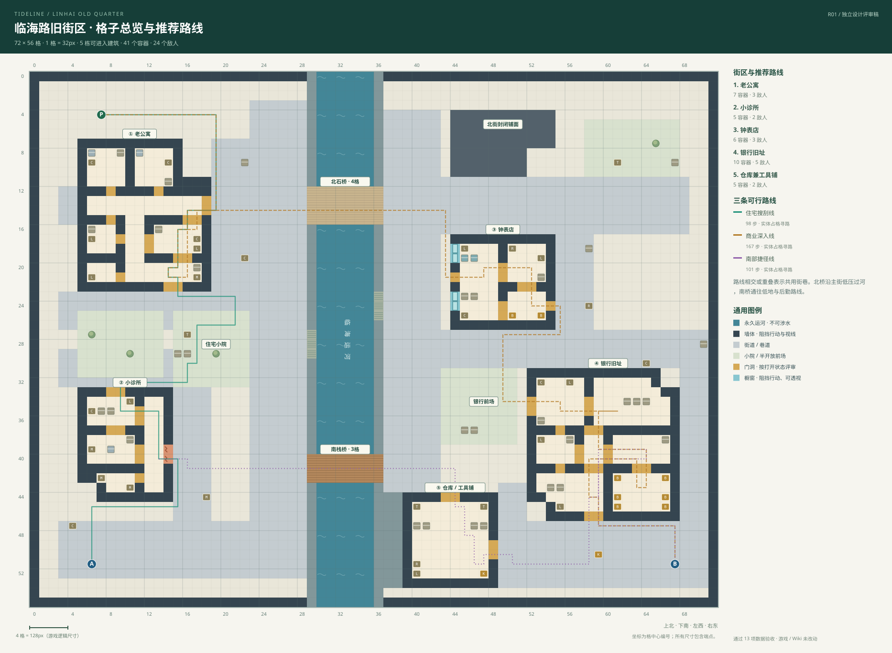
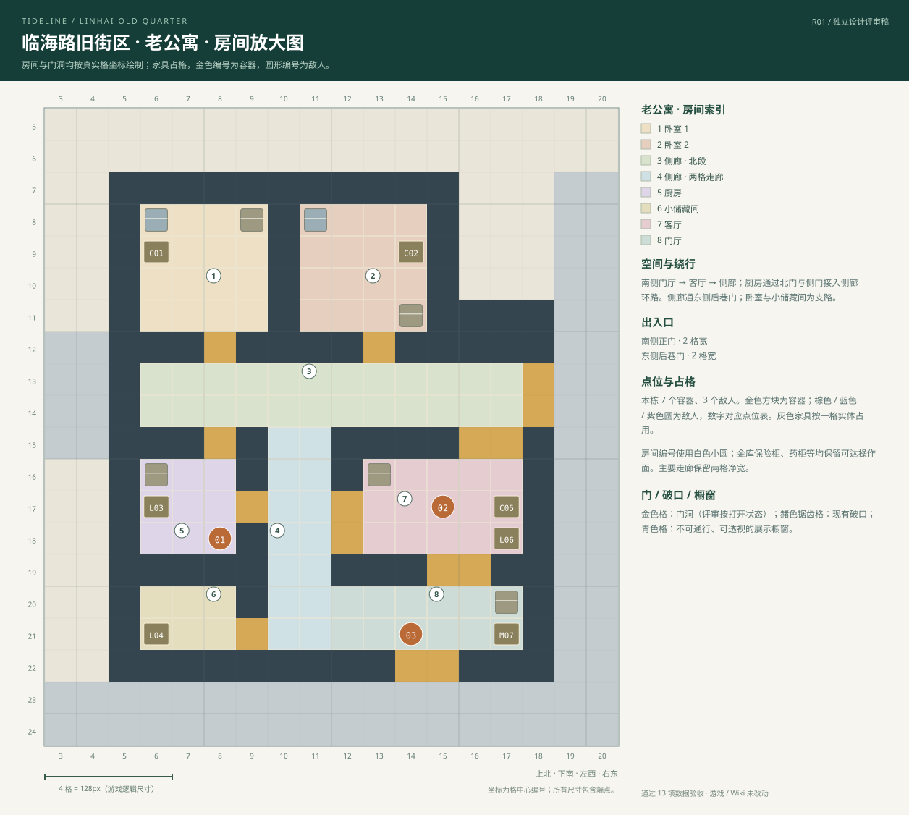
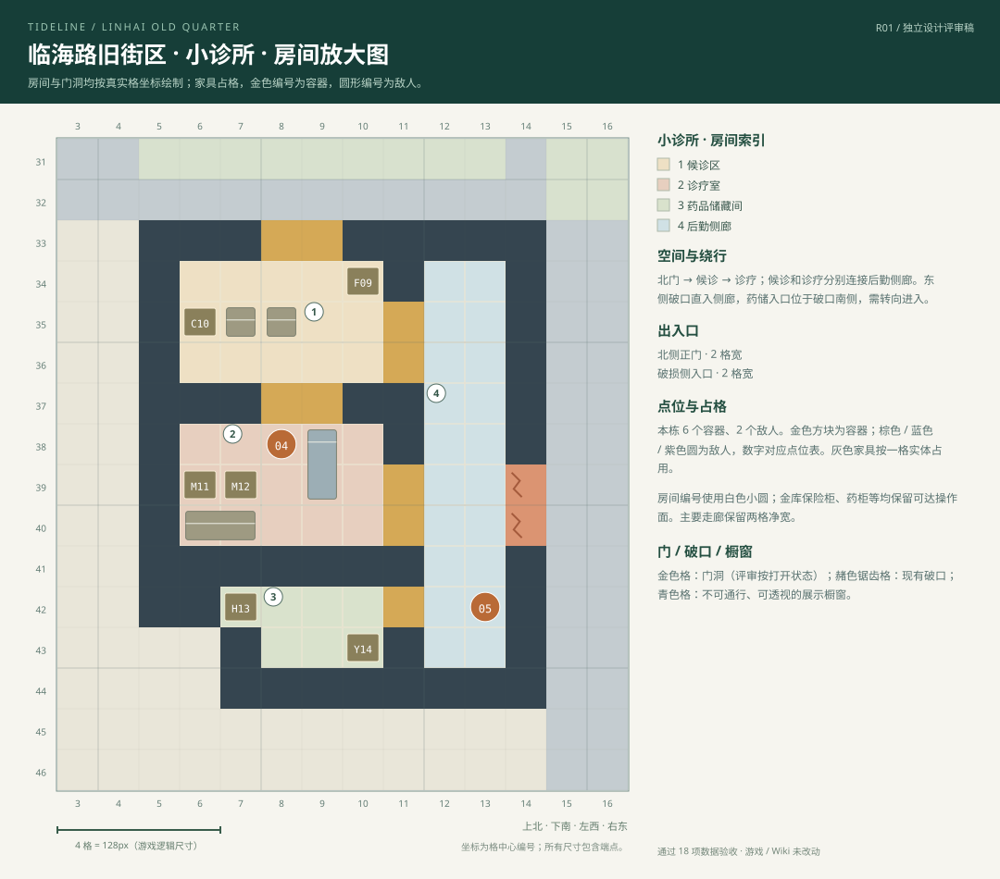
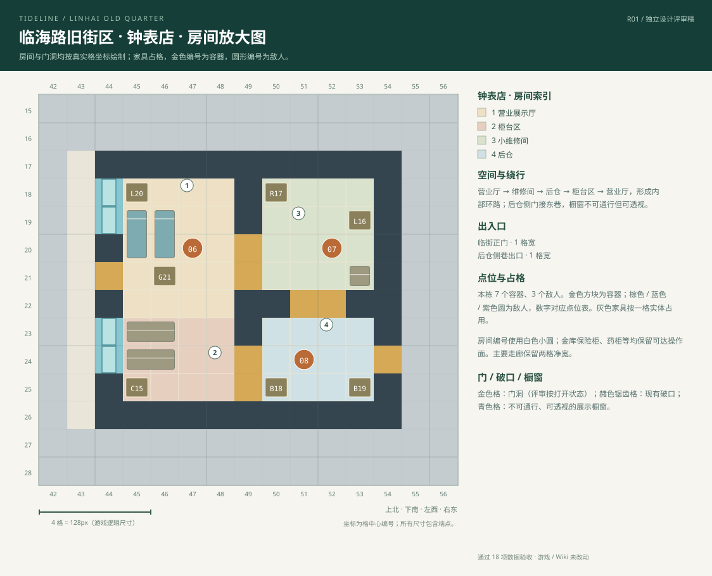
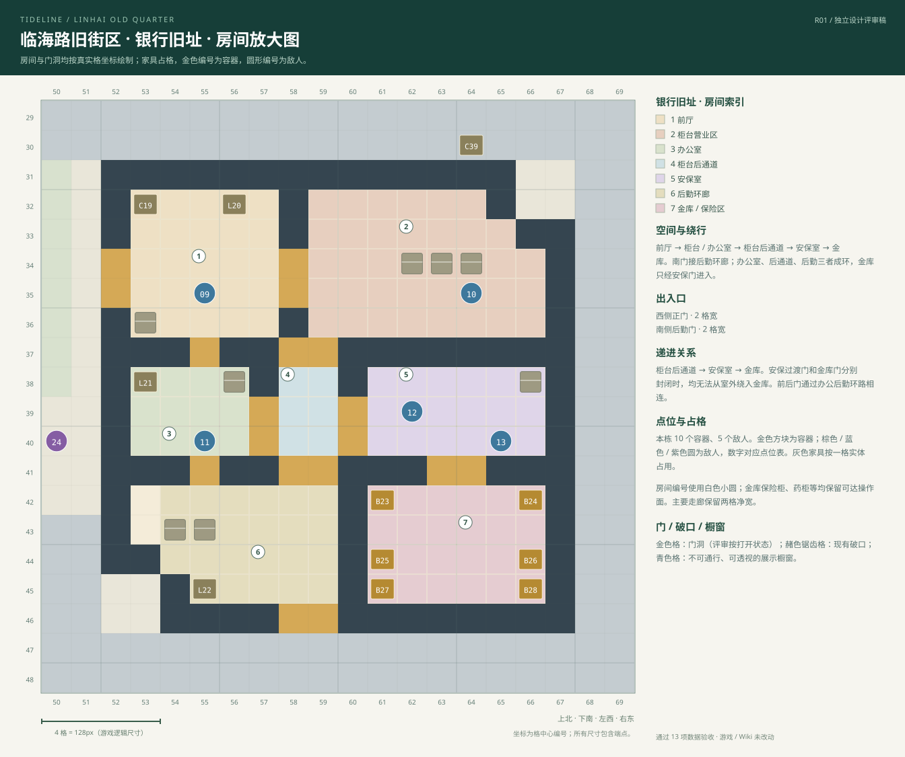
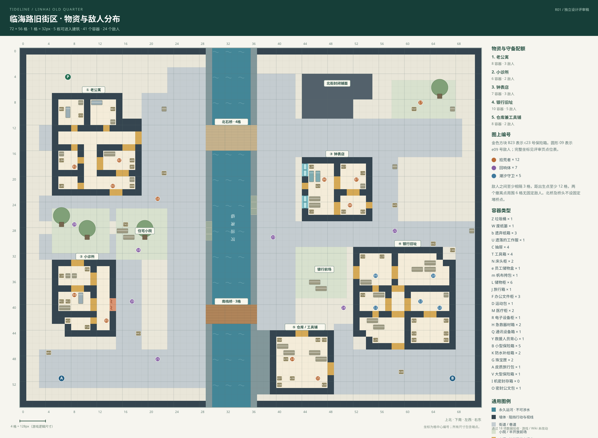
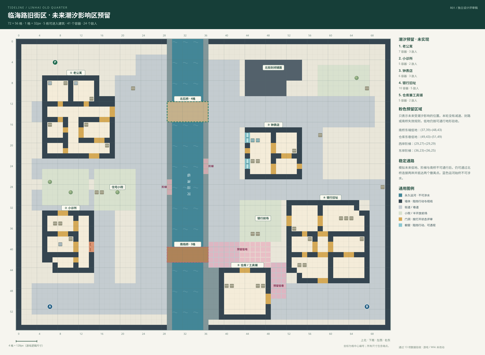

72×56 格的完整平面、坐标、比例尺、两岸分区、双桥、四栋主楼与仓库，以及三条实体占格可行路线。

评审要点
- 坐标从左上角 (0,0) 开始，范围包含端点。方格代表真实占地，展示图本身不改变游戏。
- 两座桥是仅有的跨岸通路。住宅小院与银行前场各为 8×8 格。背景封闭铺面不算可进入建筑。
- 主街保留 6 格净宽，支巷至少 3 格，室内主要走廊 2 格；灰色家具、树木与容器均占一个实体格。
查看 13 项设计验收
- ✓ 72×56 方格、完整图例与不可越界边缘
- ✓ 实体家具与 41 个箱柜无重叠、无地形冲突
- ✓ 全部空地、室内、门洞、阶梯与两处撤离点连通
- ✓ 每个箱柜都有可达、可交互的操作面
- ✓ 主街 6 格、支巷至少 3 格、主要室内走廊 2 格净宽
- ✓ 两座桥为仅有的跨岸路线，任一桥均可独立连接两岸
- ✓ 五栋建筑均有两处独立室外入口，诊所有两格破口
- ✓ 公寓、诊所与钟表店有实际室内绕行，药储不直连破口
- ✓ 银行必须通过安保过渡门和金库门，金库不连接室外
- ✓ 分区物资 / 布防配额、敌人间距和出生 / 撤离缓冲
- ✓ 室内物资与敌人确实位于所属建筑，室外点不混入室内
- ✓ 潮汐只做预留：低地仍可通行，稳定路线不受模拟封路影响
- ✓ 三条推荐路线均按实体占格寻路生成


两间卧室、厨房、客厅、储藏间、门厅、侧廊与双出入口。

评审要点
- 南侧门厅 → 客厅 → 侧廊；厨房通过北门与侧门接入侧廊环路。侧廊通东侧后巷门；卧室与小储藏间为支路。
- 东北四格凹口形成附属后院；南侧门厅、东侧后巷门是两条独立入口。卧室和储藏间为支路，主要活动空间形成绕行环路。
房间 / 功能区索引
| 图中编号 | 空间 | 格子范围 |
|---|---|---|
| 1 | 卧室 1 | (6, 8)–(9, 11) |
| 2 | 卧室 2 | (11, 8)–(14, 11) |
| 3 | 侧廊 · 北段 | (6, 13)–(17, 14) |
| 4 | 侧廊 · 两格走廊 | (10, 15)–(11, 21) |
| 5 | 厨房 | (6, 16)–(8, 18) |
| 6 | 小储藏间 | (6, 20)–(8, 21) |
| 7 | 客厅 | (13, 16)–(17, 18) |
| 8 | 门厅 | (12, 20)–(17, 21) |
独立出入口
| 名称 | 宽度 | 格坐标 |
|---|---|---|
| 南侧正门 | 2 格 | (14, 22) / (15, 22) |
| 东侧后巷门 | 2 格 | (18, 13) / (18, 14) |


候诊、诊疗、药品储藏、两格后勤廊与东侧破损入口。

评审要点
- 北门 → 候诊 → 诊疗；候诊和诊疗分别连接后勤侧廊。东侧破口直入侧廊，药储入口位于破口南侧，需转向进入。
- 药柜位于独立药储空间。破口进入后勤侧廊后还需转向通过药储门，不能从室外直接走进药柜区。
房间 / 功能区索引
| 图中编号 | 空间 | 格子范围 |
|---|---|---|
| 1 | 候诊区 | (6, 34)–(10, 36) |
| 2 | 诊疗室 | (6, 38)–(10, 40) |
| 3 | 药品储藏间 | (6, 42)–(10, 43) |
| 4 | 后勤侧廊 | (12, 34)–(13, 43) |
独立出入口
| 名称 | 宽度 | 格坐标 |
|---|---|---|
| 北侧正门 | 2 格 | (8, 33) / (9, 33) |
| 破损侧入口 | 2 格 | (14, 39) / (14, 40) |


临街橱窗、营业厅、柜台、维修间、后仓与内部环路。

评审要点
- 营业厅 → 维修间 → 后仓 → 柜台区 → 营业厅，形成内部环路；后仓侧门接东巷，橱窗不可通行但可透视。
- 展示橱窗面向西侧商业街，标为不可通行、可透视。前店与后仓分区清楚，后门提供绕行路线。
房间 / 功能区索引
| 图中编号 | 空间 | 格子范围 |
|---|---|---|
| 1 | 营业展示厅 | (45, 18)–(48, 22) |
| 2 | 柜台区 | (45, 23)–(48, 25) |
| 3 | 小维修间 | (50, 18)–(53, 21) |
| 4 | 后仓 | (50, 23)–(53, 25) |
独立出入口
| 名称 | 宽度 | 格坐标 |
|---|---|---|
| 临街正门 | 1 格 | (44, 21) |
| 后仓侧巷出口 | 1 格 | (54, 24) |


前厅、柜台、办公室、后通道、后勤环廊、安保与金库，以及前后两条进出路线。

评审要点
- 前厅 → 柜台 / 办公室 → 柜台后通道 → 安保室 → 金库。南门接后勤环廊；办公室、后通道、后勤三者成环，金库只经安保门进入。
- 银行守备分为前厅/营业区、办公室、安保区三层。金库内不堆敌人；后门也必须经过安保过渡后才能进入金库。
- 银行没有新钥匙、门禁或机关，设计挑战来自空间推进、守备和回撤路径。
房间 / 功能区索引
| 图中编号 | 空间 | 格子范围 |
|---|---|---|
| 1 | 前厅 | (53, 32)–(57, 36) |
| 2 | 柜台营业区 | (59, 32)–(66, 36) |
| 3 | 办公室 | (53, 38)–(56, 40) |
| 4 | 柜台后通道 | (58, 38)–(59, 40) |
| 5 | 安保室 | (61, 38)–(66, 40) |
| 6 | 后勤环廊 | (54, 42)–(59, 45) |
| 7 | 金库 / 保险区 | (61, 42)–(66, 45) |
独立出入口
| 名称 | 宽度 | 格坐标 |
|---|---|---|
| 西侧正门 | 2 格 | (52, 34) / (52, 35) |
| 南侧后勤门 | 2 格 | (58, 46) / (59, 46) |


全部 41 个容器、24 个敌人的类型、编号与固定格坐标，分区配额和出生/撤离缓冲说明。

评审要点
- 首稿配额与当前版本相同：41 个容器、24 个敌人；不扩大掉落总量。
- 北桥及桥头不设固定堵桥点；南桥不设固定战斗关卡，邻近街区的巡逻和暴露地形构成风险。
- 敌人至少相隔 3 格，距出生点至少 12 格，撤离点周围 6 格无固定敌人。
分区配额
| 分区 | 容器 | 敌人 |
|---|---|---|
| 老公寓 | 7 | 3 |
| 小诊所 | 5 | 2 |
| 钟表店 | 6 | 3 |
| 银行旧址 | 10 | 5 |
| 仓库兼工具铺 | 5 | 2 |
| 街巷 / 小院 / 河岸 | 8 | 9 |
展开全部 41 个容器点位
| 图上编号 / 数据 ID | 类别 | 分区 | 坐标 | 掉落偏好（规划） |
|---|---|---|---|---|
| C01 / c01 | 抽屉 | 老公寓 | (6, 9) | life |
| C02 / c02 | 抽屉 | 老公寓 | (14, 9) | life |
| L03 / c03 | 储物柜 | 老公寓 | (6, 17) | life |
| L04 / c04 | 储物柜 | 老公寓 | (6, 21) | life |
| C05 / c05 | 抽屉 | 老公寓 | (17, 17) | life |
| L06 / c06 | 储物柜 | 老公寓 | (17, 18) | life |
| M07 / c07 | 医疗柜 | 老公寓 | (17, 21) | life |
| M08 / c08 | 医疗柜 | 小诊所 | (7, 42) | med |
| M09 / c09 | 医疗柜 | 小诊所 | (10, 43) | med |
| M10 / c10 | 医疗柜 | 小诊所 | (6, 39) | med |
| L11 / c11 | 储物柜 | 小诊所 | (10, 34) | med |
| C12 / c12 | 抽屉 | 小诊所 | (6, 35) | med |
| C13 / c13 | 抽屉 | 钟表店 | (45, 25) | antiq / lux |
| L14 / c14 | 储物柜 | 钟表店 | (53, 19) | antiq / lux |
| R15 / c15 | 电子设备柜 | 钟表店 | (50, 18) | antiq / lux |
| B16 / c16 | 保险箱 | 钟表店 | (50, 25) | antiq / lux |
| B17 / c17 | 保险箱 | 钟表店 | (53, 25) | antiq / lux |
| L18 / c18 | 储物柜 | 钟表店 | (45, 18) | antiq / lux |
| C19 / c19 | 抽屉 | 银行旧址 | (53, 32) | lux / antiq / art |
| L20 / c20 | 储物柜 | 银行旧址 | (56, 32) | lux / antiq / art |
| L21 / c21 | 储物柜 | 银行旧址 | (53, 38) | lux / antiq / art |
| L22 / c22 | 储物柜 | 银行旧址 | (55, 45) | lux / antiq / art |
| B23 / c23 | 保险箱 | 银行旧址 | (61, 42) | lux / antiq / art |
| B24 / c24 | 保险箱 | 银行旧址 | (66, 42) | lux / antiq / art |
| B25 / c25 | 保险箱 | 银行旧址 | (61, 44) | lux / antiq / art |
| B26 / c26 | 保险箱 | 银行旧址 | (66, 44) | lux / antiq / art |
| B27 / c27 | 保险箱 | 银行旧址 | (61, 45) | lux / antiq / art |
| B28 / c28 | 保险箱 | 银行旧址 | (66, 45) | lux / antiq / art |
| T29 / c29 | 工具箱 | 仓库兼工具铺 | (40, 45) | ind / elec |
| T30 / c30 | 工具箱 | 仓库兼工具铺 | (47, 45) | ind / elec |
| R31 / c31 | 电子设备柜 | 仓库兼工具铺 | (40, 51) | ind / elec |
| L32 / c32 | 储物柜 | 仓库兼工具铺 | (40, 52) | ind / elec |
| K33 / c33 | 防水补给箱 | 仓库兼工具铺 | (47, 52) | ind / elec |
| C34 / c34 | 抽屉 | 街巷 / 小院 / 河岸 | (22, 19) | life / ind |
| T35 / c35 | 工具箱 | 街巷 / 小院 / 河岸 | (16, 27) | life / ind |
| M36 / c36 | 医疗柜 | 街巷 / 小院 / 河岸 | (18, 44) | life / ind |
| C37 / c37 | 抽屉 | 街巷 / 小院 / 河岸 | (4, 47) | life / ind |
| R38 / c38 | 电子设备柜 | 街巷 / 小院 / 河岸 | (58, 24) | life / ind |
| C39 / c39 | 抽屉 | 街巷 / 小院 / 河岸 | (64, 30) | life / ind |
| T40 / c40 | 工具箱 | 街巷 / 小院 / 河岸 | (61, 9) | life / ind |
| K41 / c41 | 防水补给箱 | 街巷 / 小院 / 河岸 | (59, 50) | life / ind |
展开全部 24 个敌人点位
| 图上编号 / 数据 ID | 类型 | 分区 | 坐标 | 巡逻选点半径 |
|---|---|---|---|---|
| 01 / e01 | 拾荒者 | 老公寓 | (8, 18) | 2 格 |
| 02 / e02 | 拾荒者 | 老公寓 | (15, 17) | 2 格 |
| 03 / e03 | 拾荒者 | 老公寓 | (14, 21) | 2 格 |
| 04 / e04 | 拾荒者 | 小诊所 | (8, 38) | 2 格 |
| 05 / e05 | 拾荒者 | 小诊所 | (13, 42) | 2 格 |
| 06 / e06 | 拾荒者 | 钟表店 | (47, 20) | 2 格 |
| 07 / e07 | 拾荒者 | 钟表店 | (52, 20) | 2 格 |
| 08 / e08 | 拾荒者 | 钟表店 | (51, 24) | 2 格 |
| 09 / e09 | 潮汐守卫 | 银行旧址 | (55, 35) | 2 格 |
| 10 / e10 | 潮汐守卫 | 银行旧址 | (64, 35) | 2 格 |
| 11 / e11 | 潮汐守卫 | 银行旧址 | (55, 40) | 2 格 |
| 12 / e12 | 潮汐守卫 | 银行旧址 | (62, 39) | 2 格 |
| 13 / e13 | 潮汐守卫 | 银行旧址 | (65, 40) | 2 格 |
| 14 / e14 | 拾荒者 | 仓库兼工具铺 | (42, 48) | 2 格 |
| 15 / e15 | 拾荒者 | 仓库兼工具铺 | (46, 51) | 2 格 |
| 16 / e16 | 拾荒者 | 街巷 / 小院 / 河岸 | (21, 23) | 3 格 |
| 17 / e17 | 拾荒者 | 街巷 / 小院 / 河岸 | (62, 8) | 3 格 |
| 18 / e18 | 回响体 | 街巷 / 小院 / 河岸 | (18, 31) | 3 格 |
| 19 / e19 | 回响体 | 街巷 / 小院 / 河岸 | (17, 39) | 3 格 |
| 20 / e20 | 回响体 | 街巷 / 小院 / 河岸 | (8, 27) | 3 格 |
| 21 / e21 | 回响体 | 街巷 / 小院 / 河岸 | (21, 48) | 3 格 |
| 22 / e22 | 回响体 | 街巷 / 小院 / 河岸 | (58, 28) | 3 格 |
| 23 / e23 | 回响体 | 街巷 / 小院 / 河岸 | (39, 29) | 3 格 |
| 24 / e24 | 回响体 | 街巷 / 小院 / 河岸 | (50, 40) | 3 格 |


仅标注南桥东端低地、仓库东巷、两岸阶梯；不接入动态潮汐。

评审要点
- 粉色仅代表未来潮汐预留区。当前设计验收按正常可通行低地检查，没有运行时水位、减速或封路逻辑。
- 常态运河一直不可涉水；北桥、普通街区、两个撤离点属于稳定路线。
- 额外模拟预留区和南桥同时封闭，仍能通过北桥抵达两处撤离点。这是设计可行性检查，不是游戏功能。
预留边界
| 区域 | 范围 | 本轮状态 |
|---|---|---|
| 南桥东端低地 | (37, 39)–(48, 43) | 仅标注，未实现 |
| 仓库东巷低地 | (49, 43)–(51, 49) | 仅标注，未实现 |
| 西岸阶梯 | (29, 27)–(29, 29) | 仅标注，未实现 |
| 东岸阶梯 | (36, 23)–(36, 25) | 仅标注，未实现 |